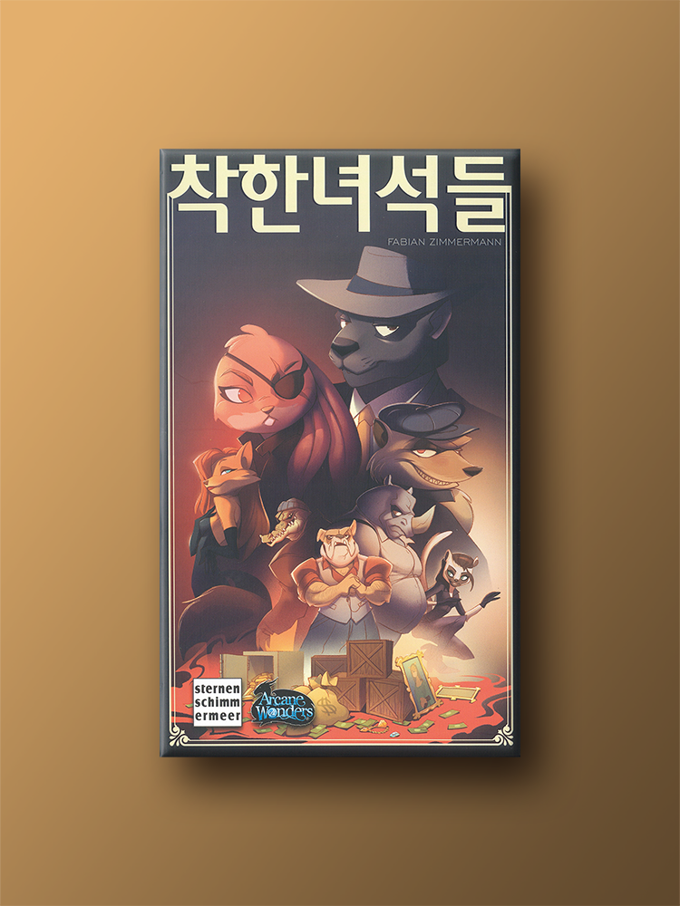

|  |
Best Recommend.
경쟁과 협력 사이 <착한 녀석들>
인원 수: 4-8명, 예상 시간: 30-45분
보드게임에도 다양한 장르가 있지만 나는 협상 게임을 가장 좋아한다.
그럴듯한 명분으로 사람을 홀리고 남몰래 최대한의 이익을 추구하며
사람의 이기적인 본성을 건드리는 자극적인 매력을 가졌기 때문이다.
착한녀석들은 조직원이 장물을 나누는 과정을 그린 협상 게임이다.
보스가 주관적으로 장물을 분배하고 나면 다수결로 투표를 진행하고
투표 결과에 따라 장물 분배와 보스의 연임 여부를 결정한다.
비열한 조직답게 찬성과 반대 대신 장물 하나를 슬쩍 훔치거나
다른 조직원을 위협하고 장물을 뺏어오는 행동을 시도할 수도 있다.
게임은 카드 더미에 숨겨진 경찰 카드가 나올 때까지 진행된다.
협잡과 배신이 난무한 끝에 가장 많은 장물을 획득한 사람은 누구일까?
|